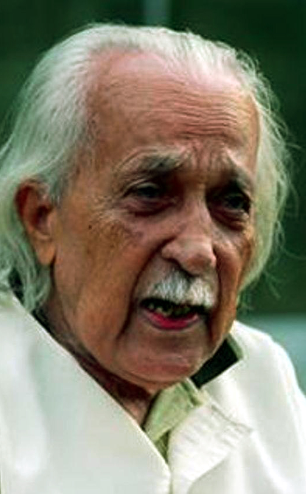
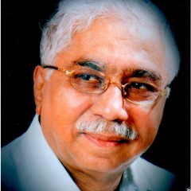

1.Kuvempu

→ Childhood:
Kuvempu was born on December 29, 1904, in Hirekodige, a village in Karnataka, India.
He was the third among four children of his parents. His childhood was spent in the midst of nature, which would later become a prominent theme in his writings.
→ Books written:
Kuvempu was a prolific writer and wrote in both Kannada and English. Some of his notable works include:
⋆ Kanooru Heggadithi (novel)
⋆ Malegalalli Madumagalu (novel)
⋆ Kuvempu Kriti Shreni (collection of poems)
⋆ Vasantha Kusumanjali (collection of poems)
⋆ Ramayana Darshanam (epic poem)
⋆ Chinnara Chilipili (children's book)
→ Awards:
Kuvempu received many awards and accolades for his contributions to literature and social work. Some of the notable ones include:
⋆ Jnanpith Award in 1967 for his epic poem, "Ramayana Darshanam."
⋆ Padma Vibhushan in 1988, the second-highest civilian award in India.
⋆ Sahitya Akademi Award for his book, "Kanooru Heggadithi."
⋆ Karnataka Ratna, the highest civilian award in Karnataka, in 1992.
2.Da. Ra.Bendre

→ Childhood:
Dara Bendre was born on 31 March 1896 in the village of Dharwad in Karnataka, India.
He was the second child of his parents and spent most of his childhood in Dharwad.
His father was a school teacher and played an instrumental role in nurturing his interest in literature.
→ Books written:
Dara Bendre was a prolific writer and has written several poems and essays in Kannada. Some of his notable works include:
⋆ Naku Tanti, a collection of poems
⋆ Bendre Kavya, a collection of poems
⋆ Moorthi Mattu I, a collection of essays
⋆ Gari, a collection of poems
⋆ Uyyale, a collection of poems
→ Awards:
Dara Bendre was honored with several awards for his contributions to literature and philosophy. Some of the notable ones include:
⋆ Karnataka Ratna, the highest civilian award in Karnataka, in 1973.
⋆ Sahitya Akademi Award for his book "Naku Tanti" in 1968.
⋆ Padma Shri, the fourth highest civilian award in India, in 1968.
3.Shivaram Karanth
 → Childhood:
K. Shivarama Karanth was born on October 10, 1902, in the village of Balavana in Karnataka, India.
His father was a school teacher and played a key role in shaping his early education.
Karanth was an avid reader from a young age and developed a keen interest in nature and the environment.
→ Books written:
K. Shivarama Karanth was a prolific writer and has written several books in Kannada and English. Some of his notable works include:
⋆ Chomana Dudi, a novel
⋆ Mookajjiya Kanasugalu, a novel
⋆ Kudiyara Koochalu, a novel
⋆ Marali Mannige, a novel
⋆ Hosa Jeevana, an autobiography
→ Awards:
K. Shivarama Karanth received several awards and honors for his contributions to literature and social work. Some of the notable ones include:
⋆ Jnanpith Award, the highest literary award in India, in 1977.
⋆ Padma Bhushan, the third-highest civilian award in India, in 1968.
⋆ Sahitya Akademi Award for his novel "Mookajjiya Kanasugalu" in 1967.
⋆ Ramon Magsaysay Award for Community Leadership in 1989.
4.Maasti Venkatesh Iyengar

→ Childhood:
Venkatesh Iyengar was born on 1 September 1869 in the village of Hosahalli in the Mysore Kingdom, which is now part of Karnataka state, India.
His father was a priest and scholar who taught him the basics of Sanskrit and Kannada.
Iyengar completed his early education in a local school and later went to Bangalore to pursue his higher education.
→ Books written:
Venkatesh Iyengar was a prolific writer and has written several books in Kannada. Some of his notable works include:
⋆ Manku Thimmana Kagga, a collection of poems
⋆ Karnataka Kavithegalu, a collection of poems
⋆ Brahmi, a play
⋆ Satyakathegalu, a collection of short stories
⋆ Mysore Mallige, a collection of poems
→ Awards:
Venkatesh Iyengar received several awards and honors for his contributions to literature and journalism. Some of the notable ones include:
⋆ Sahitya Akademi Award for his book "Manku Thimmana Kagga" in 1958.
⋆ Padma Bhushan, the third-highest civilian award in India, in 1958.
⋆ Karnataka Ratna, the highest civilian award in Karnataka, in 1966.
5.V. K. Gokak

→ Childhood:
Vinayaka Krishna Gokak was born on 9 August 1909 in the village of Savanur in the Dharwad district of Karnataka, India.
His father was a Sanskrit scholar and teacher who instilled in him a love for literature and learning.
Gokak completed his early education in a local school and later went to Mumbai to pursue his higher education.
→ Books written:
Vinayaka Krishna Gokak was a prolific writer and has written several books in Kannada and English. Some of his notable works include:
⋆ Bharatha Sindhuram, a collection of poems
⋆ A Day in the Life of Saraswati, a play
⋆ The Golden Treasury of Indian Literature, an anthology
⋆ The Concept of Mind in Indian Philosophy, a philosophical work
⋆ The Epic Strain in the English Novel, a literary criticism
→ Awards:
Vinayaka Krishna Gokak received several awards and honors for his contributions to literature and education. Some of the notable ones include:
⋆ Jnanpith Award, the highest literary award in India, in 1990.
⋆ Padma Shri, the fourth highest civilian award in India, in 1968.
⋆ Sahitya Akademi Award for his book "Bharatha Sindhuram" in 1955.
⋆ D.Litt. from several universities, including the University of Delhi and the University of Mysore.
6.U.R. Ananthamurthy

→ Childhood:
U.R. Ananthamurthy was born on 21 December 1932 in Melige village in the Tirthahalli taluk of the Shimoga district of Karnataka, India.
His father was a school teacher and Ananthamurthy grew up in an environment that valued education and culture.
He completed his early education in a local school and later went to Mysore for his college education.
→ Books written:
U.R. Ananthamurthy was a prolific writer and has written several books in Kannada and English. Some of his notable works include:
⋆ Samskara, a novel
⋆ Bharathipura, a novel
⋆ Avasthe, a novel
⋆ Bhava, a collection of essays
⋆ Suragi, a collection of poemsbr>
→ Awards:
U.R. Ananthamurthy received several awards and honors for his contributions to literature, education, and public life. Some of the notable ones include:
⋆ Jnanpith Award, the highest literary award in India, in 1994.
⋆ Padma Bhushan, the third highest civilian award in India, in 1998.
⋆ Sahitya Akademi Award for his book "Samskara" in 1976.
⋆ Rajyotsava Award, the highest civilian award in Karnataka, in 1984.
7.Girish Karnad

→ Childhood:
Girish Karnad was born on 19 May 1938 in Matheran, a hill station near Mumbai, India.
His family was from the Konkan region of Karnataka and his father was a doctor.
Karnad completed his early education in Sirsi and Dharwad, two cities in Karnataka, and later went to Mumbai for his college education.
→ Books written:
Girish Karnad was a prolific writer and has written several plays, films, and books in Kannada and English. Some of his notable works include:
⋆ Tughlaq, a play
⋆ Hayavadana, a play
⋆ Nagamandala, a play
⋆ A Heap of Broken Images, a play
⋆ Swami and Friends, a TV series based on the novel by R.K. Narayan
⋆ Utsav, a film adaptation of the play "Mricchakatika"
⋆ Tabbaliyu Neenade Magane, a novel in Kannada
→ Awards:
Girish Karnad received several awards and honors for his contributions to theatre, literature, and cinema. Some of the notable ones include:
⋆ Jnanpith Award, the highest literary award in India, in 1998.
⋆ Padma Shri, the fourth highest civilian award in India, in 1974.
⋆ Padma Bhushan, the third highest civilian award in India, in 1992.
⋆ Sahitya Akademi Award for his play "Tughlaq" in 1972.
⋆ Sangeet Natak Akademi Award for his contributions to theatre in 1972.
8.chandrashekar kambar
 → Childhood:
Chandrashekar Kambar was born on 2 January 1937 in Ghodageri, a small village in the state of Karnataka, India.
His parents were farmers and he grew up in a rural environment.
He completed his early education in a local school and later went to Mysore for his college education.
→ Books written:
Chandrashekar Kambar is a prolific writer and has written several plays, novels, and poems in Kannada. Some of his notable works include:
⋆ Jokumaraswamy, a play
⋆ Siri Sampige, a play
⋆ Rishyashringa, a play
⋆ Karimayi, a novel
⋆ Shivana Taranga, a collection of poems
→ Awards:
Chandrashekar Kambar received several awards and honors for his contributions to Kannada literature and theatre. Some of the notable ones include:
⋆ Jnanpith Award, the highest literary award in India, in 2010.
⋆ Padma Shri, the fourth highest civilian award in India, in 1988.
⋆ Sahitya Akademi Award for his play "Jokumaraswamy" in 1974.
⋆ Sangeet Natak Akademi Award for his contributions to Kannada theatre in 1983.